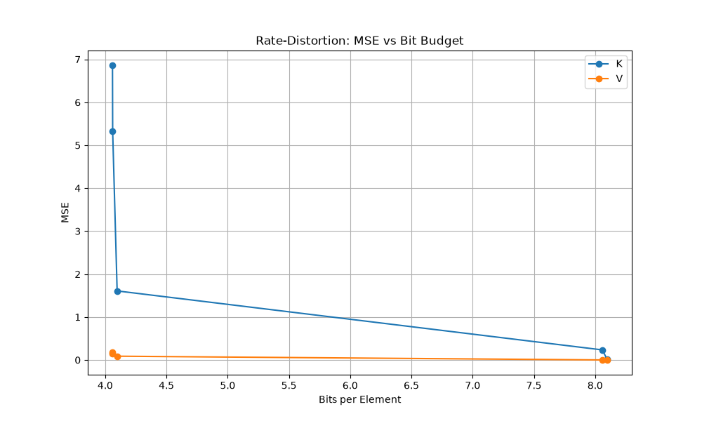
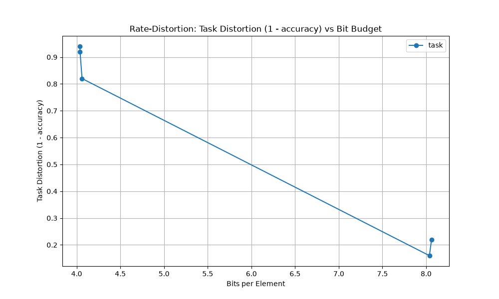
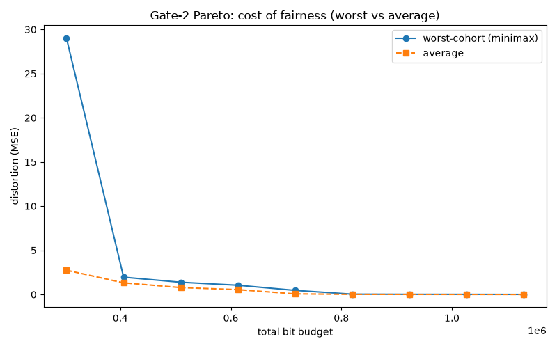
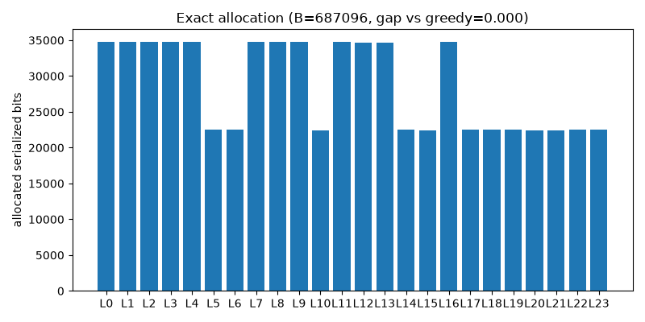
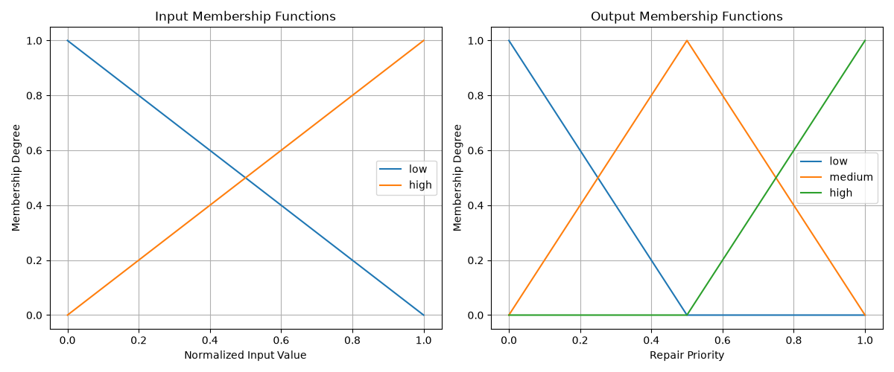

Static export of the frozen study artifacts, for presenting without the live dashboard. Every number here comes from a committed artifact file; missing artifacts are shown as such, never as placeholder data.
Hardware: macOS-26.5.1-arm64-arm-64bit-Mach-O — 4 torch threads, power mode normal
| seq | codec | encode p50 (ms) | encode p95 (ms) | decode p50 (ms) | serialized bytes | ratio vs fp32 |
|---|---|---|---|---|---|---|
| 13 | scalar_int8 | 0.6 | 0.73 | 0.22 | 41303 | 3.87 |
| 13 | scalar_int4 | 1.0 | 8.73 | 0.99 | 21336 | 7.49 |
| 13 | lbg_vd8_cb256 | 49.65 | 81.06 | 0.21 | 13679 | 11.68 |
| 44 | scalar_int8 | 1.26 | 1.7 | 0.6 | 136537 | 3.96 |
| 44 | scalar_int4 | 1.64 | 3.17 | 1.37 | 68954 | 7.84 |
| 44 | lbg_vd8_cb256 | 60.27 | 72.23 | 0.3 | 25585 | 21.13 |
| 109 | scalar_int8 | 1.97 | 2.98 | 0.82 | 336220 | 3.98 |
| 109 | scalar_int4 | 2.43 | 2.91 | 1.81 | 168797 | 7.93 |
| 109 | lbg_vd8_cb256 | 83.84 | 95.12 | 0.72 | 50547 | 26.5 |
28 claims tracked, 5 negative or weak.
| id | claim | status |
|---|---|---|
| C-11 (Gate 1) | Tokenizer/evidence fragmentation (n_g) causally predicts additional compression-induced task failure, beyond a base-model confound. | **WEAK_PASS**: only TopK50 shows a directionally-consistent, statistically significant (p=0.0004) effect (7.5 points, n_g=1→8), below the pre-registered 10-point "meaningful" bar; FullKV control itsel |
| C-21 (Gate 2) | Minimax allocation meaningfully reduces cross-cohort compression-degradation disparity vs aggregate-optimal allocation at matched bits. | **FAIL** across **6 runs** (2 seeds × 3 budgets): the aggregate and minimax allocators chose IDENTICAL per-cohort bit-widths in EVERY run (worst-cohort fairness benefit 0.000, CI [0,0], 0% directional |
| C-23 (Gate 4) | The Module 3 fuzzy repair-priority scorer meaningfully beats no-repair AND is not dominated by its simpler competitors (monotone/knapsack/logistic), c | **FAIL**: fuzzy's mean accuracy gain over no_repair was -0.013 (25% directionally consistent, below the 80% bar), its mean worst-cohort-degradation gain was -0.050 (fuzzy INCREASED the worst cohort's |
| C-27 (Gate 3) | The Gate 1 (fragmentation) and Gate 2 (fairness) findings reproduce in decision CATEGORY across two materially different tokenizer/model families - no | **PASS**: Gate 1 WEAK_PASS on both families; Gate 2 FAIL on both families (but via DIFFERENT root causes - Qwen: aggregate/minimax picked identical allocations; TinyLlama: matched-bit tolerance violat |
| C-28 | The Prompt 17 item-119 interaction effects **model family x allocator** and **quantizer type x cohort** are measurable at pilot scale and show no inte | Validated as NULL results, reported plainly. (a) Aggregate and minimax allocators selected **identical** allocations on BOTH families - independently corroborating the Gate 2 FAIL (R-09) and showing t |




